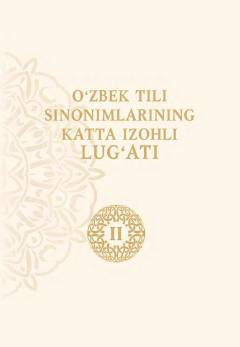

OTO'zbek tilining boy sinonimlarini izohlovchi yirik akademik lug'atning ikkinchi jildi.
Ushbu lug'at o'zbek tilining sinonimlarini keng qamrovli tarzda izohlab beruvchi yirik ilmiy nashrdir. Kitob O'zbekiston Respublikasi Fanlar akademiyasi O'zbek tili, adabiyoti va folklori instituti tomonidan tayyorlangan bo'lib, ikkinchi jildni o'z ichiga oladi.